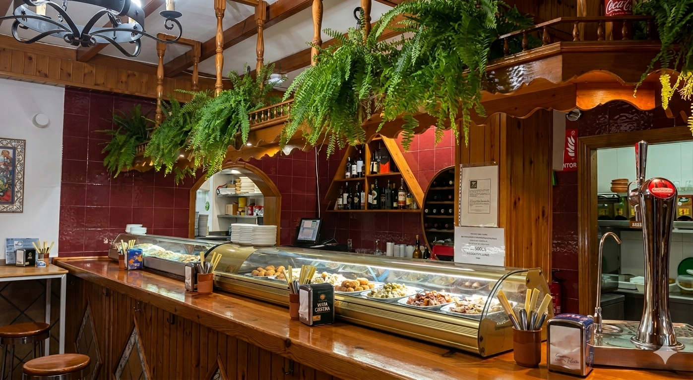

Un bar de siempre,
con el sabor de siempre
El Chiquito lleva décadas siendo un referente en Algeciras para quienes buscan la auténtica cocina andaluza. Nacimos como un pequeño bar de barrio y hoy seguimos con el mismo espíritu: producto fresco, elaboración honesta y trato cercano.
Desde nuestras croquetas caseras hasta el tomate relleno o las gambas a la plancha, cada plato respeta las raíces de la cocina del Campo de Gibraltar. Sin artificios, con mucho sabor.
Pescado fresco
Seleccionado diariamente en lonja local
Carne ibérica
Presa, secreto y lomo de primera calidad
Hecho a mano
Croquetas y rellenos elaborados cada día
Ambiente familiar
Bienvenidos todos, de lunes a domingo
Nuestro equipo
Juan Manuel
El manda másCapitán del barco y guardián de las recetas secretas. Cuando algo sale perfecto, probablemente empezó en su cabeza… y a las 7 de la mañana.
Lucía
Jefa de barraVelocidad de vértigo y memoria de elefante. Puede servir cinco mesas, preparar tres cafés y guiñarte un ojo… todo en el mismo minuto.
Loli
CocineraResponsable oficial de que digas “solo un postre”… y acabes pidiendo dos. Sus dulces tienen poderes mágicos (y cero remordimientos).
Roxana
Jefa de cocinaLa mente maestra entre fogones. Donde otros ven ingredientes, ella ve obras de arte… y platos que desaparecen en segundos.
Juan
Encargado de salaTu GPS dentro del restaurante. Sabe dónde sentarte, qué recomendarte… y hasta lo que te apetece antes de que lo digas.
Manolo
CamareroDetrás de la barra desde que abrimos. Su serranito de queso tiene lista de espera propia.
Oleh
CamareroMitad camarero, mitad lector de mentes. Si dudas qué pedir, tranquilo… él ya lo sabe y seguro que acierta.